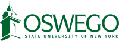

Join Us
Opportunities for Undergraduates
We're always updating this page with new jobs. Come back later for more opportunities!
Opportunities for Full-Time Staff

RF Molecular Ecologist
This is a senior-level research role that provides scientific leadership for the lab's environmental nucleic acid projects. The successful candidate will spearhead the design, validation, and application of novel eDNA/eRNA markers to address key conservation challenges.
RF Aquatic Biologist - Lake Erie
This position will conduct and lead research to inform the restoration and conservation of native fish populations in Lake Erie, driven by the goals of the New York State Department of Environmental Conservation (NYSDEC).
RF Fisheries Technicians (2 positions available)
These are full-time, field-intensive positions responsible for executing time-sensitive research operations focused on native fish reproduction in the Great Lakes basin.
RF Lab Technician
This full-time position is a critical support role that forms the foundation of our lab's success. The role is primarily lab-based but includes opportunities for fieldwork.
- Key Responsibilities: Lead projects from concept to publication, manage advanced molecular analyses (qPCR, dPCR, metabarcoding) and bioinformatics pipelines (DADA2, QIIME2), mentor lab personnel, and work closely with agency partners.
- Required Qualifications: A Master’s degree in Molecular Ecology, Genetics, or a related field with significant hands-on lab experience and expertise in the eDNA/eRNA workflow.
- Preferred Qualifications: A Ph.D., a strong publication record, expertise in eRNA methods, and proficiency in R or Python.
- Compensation: $60,000 - $90,000 annually, plus an excellent benefits package.
- Key Responsibilities: Design and execute lab and field-based experiments, integrating traditional methods (trawling, gillnetting) with advanced tools like molecular surveillance (eDNA/eRNA) and acoustic telemetry.
- Required Qualifications: A Master’s degree in biology, fisheries, or ecology; OR a Bachelor’s degree in a related field with at least two years of relevant professional experience. Must have experience with aquatic field sampling.
- Preferred Qualifications: A record of scientific writing, experience with experimental design, molecular ecology methods, statistical programming (R), and operating research vessels.
- Compensation: $58,459 - $69,107 annually, plus an excellent benefits package.
- Key Responsibilities: Plan and execute field sampling campaigns; deploy and retrieve specialized equipment, such as egg and larval traps; operate research vessels (up to 26 ft); and assist with sample processing and equipment maintenance.
- Required Qualifications: A Bachelor's degree in Fisheries, Aquatic Ecology, or a related field, 1-2 years of aquatic field research experience, and experience with boat operation and standard sampling techniques (e.g., electrofishing, netting).
- Preferred Qualifications: Experience working on Great Lakes ecosystems and familiarity with native fish identification.
- Compensation: $19 - $22 per hour ($37,050 - $42,900 annually), plus an excellent benefits package.
- Key Responsibilities: Precise execution of core molecular techniques including DNA extraction, PCR, Sanger sequencing, and next-gen library preparation (GT-seq, RAD-seq). Assist with lab management, including supply monitoring and organization of sample repositories.
- Required Qualifications: A Bachelor's degree in Biology, Molecular Biology, Genetics, or a related field, with hands-on experience in DNA extraction and PCR. Must have strong attention to detail and organizational skills.
- Preferred Qualifications: Prior experience in a research lab setting, knowledge of conservation genetics principles, and proficiency with R or Python.
- Compensation: $33,150 - $39,000 annually, plus an excellent benefits package.